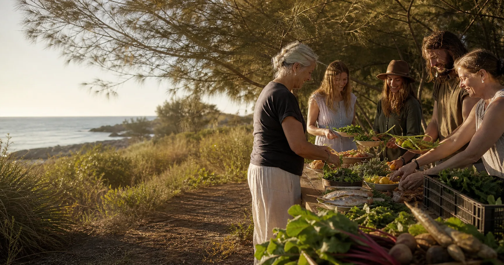
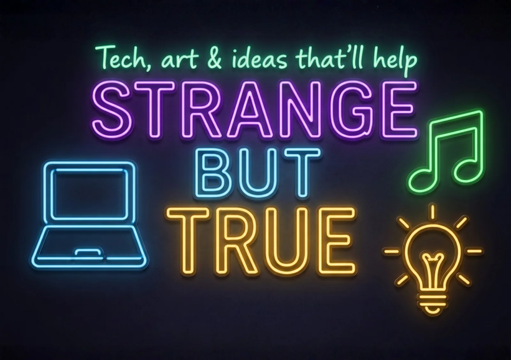

Hosts and organisers
Clarify space, timing, approval, capacity, cultural care, neighbour comfort, pack-down and update responsibility.
Community participation pathway
A question-led onboarding process for hosts, stallholders, artists, visitors, transport partners, media helpers and community groups exploring small market layers across different Straddie places and seasons.

Start by role
The process starts with participation, then moves into questions, host review and public-safe notices.
Clarify space, timing, approval, capacity, cultural care, neighbour comfort, pack-down and update responsibility.
Record table needs, power, lighting, food-safety questions, season fit, media assets and contact preferences.
Share opt-in signals about boat choice, arrival time, stay length, access needs and what would make the night useful.
Help map boat and bus windows so public notices can guide people toward calmer travel choices.
Turn confirmed public details into gig guides, weekend wraps, venue-screen updates and post-event learning notes.
Keep notices dated, sourced, privacy-aware and easy for people or agents to update.
Onboarding map
Each page supports a step in the community process: learn the pattern, map the place, check roles, publish verified notices and feed future planning.
The host-led method: ask, map, verify, notice, learn.
Candidate venues, villages, seasonal windows and question packs.
Turn any suggested venue or event into next questions and a public notice draft.
Food sharing, surplus rescue and Sovereign Space Builder place mapping.
SeaLink, Gold Cats, buses, courtesy options and visitor-flow questions.
Public-safe markdown notices, expiry dates, QR questions and screen distribution.
AI planning, simulation seeds, data flows and the news-network bridge.
Quick source scan for existing markets, arts events, venues and transport signals.

Style anchor
The visual language borrows the Strange But True dark-mode signal: deep night panels, bright purple, cyan, gold and green, readable type, and a grounded public voice. The operating rhythm is community-first: arrive prepared, add value, learn from the host and pack down cleanly.